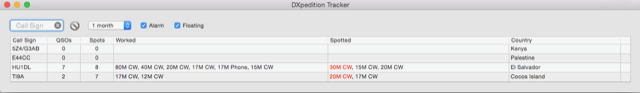

FYI, DXpedition tracking functionality is BUILT-IN to MacLoggerDX, the widely-used Macintosh logging software. (And FWIW, the feature was added specifically at my request, as I am fairly close with the developer and also wanted a way to see what band/modes I had worked with a given DXpedition.) The feature is called “DXpedition Tracker” and shows up as a movable window unto itself. You enter the callsigns of the DXpeditions you want to track (I haven’t found any limit to simultaneous DXpeditions). It shows you, for each callsign: * Which bands and modes you have worked them on * Which bands and modes they are currently spotted on, with any needed slots highlighted in RED. Here’s a screenshot of my current “watchlist”:  You can click on the red/highlighted spot indications, and it will tune your radio instantly to the correct band/mode/frequency to work that slot. Rich KE1B |